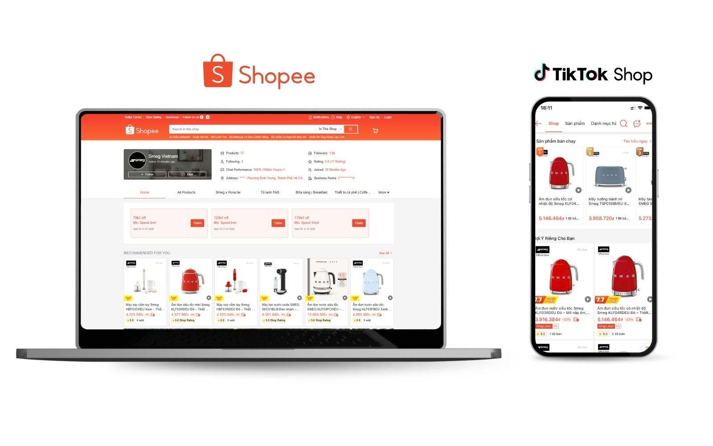
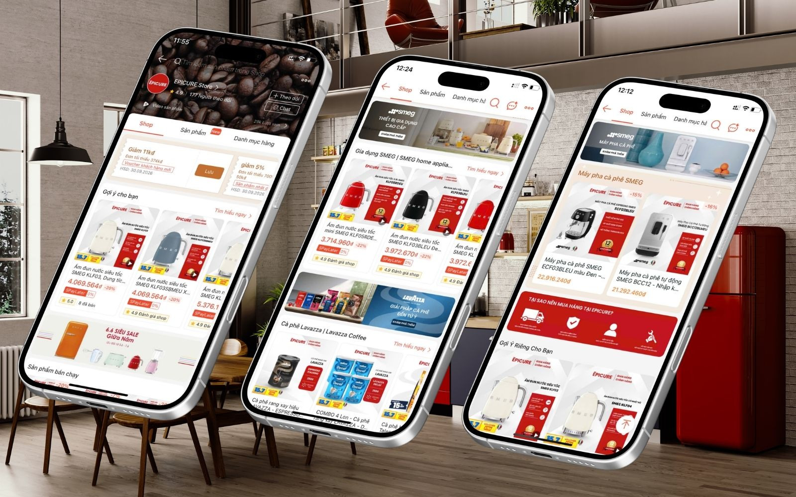
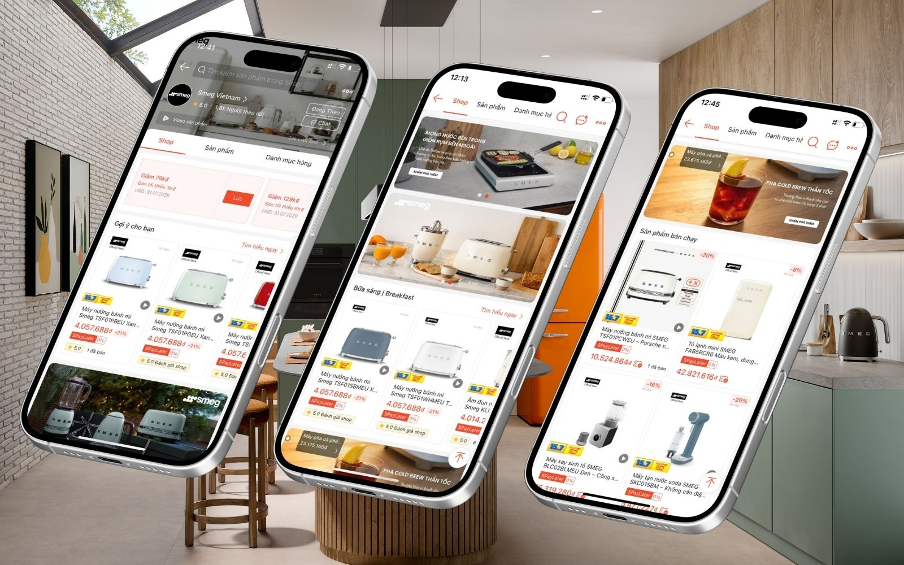
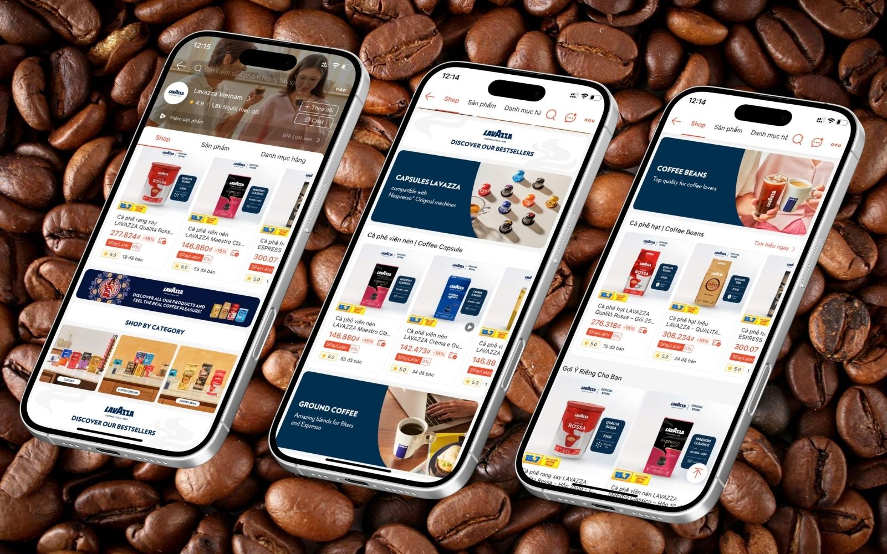
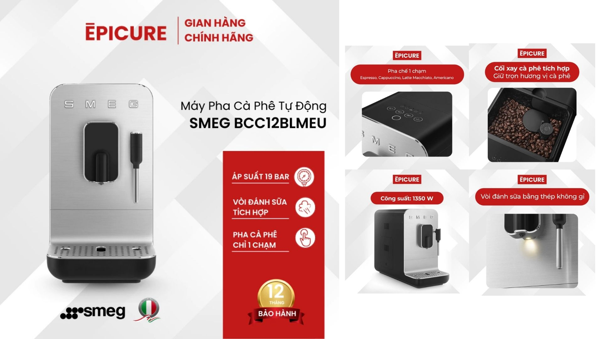
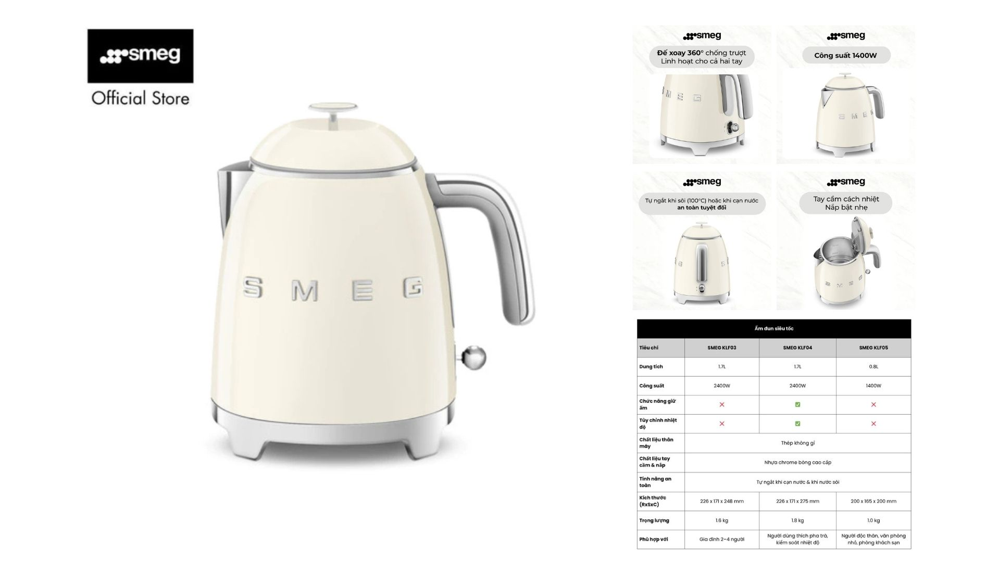
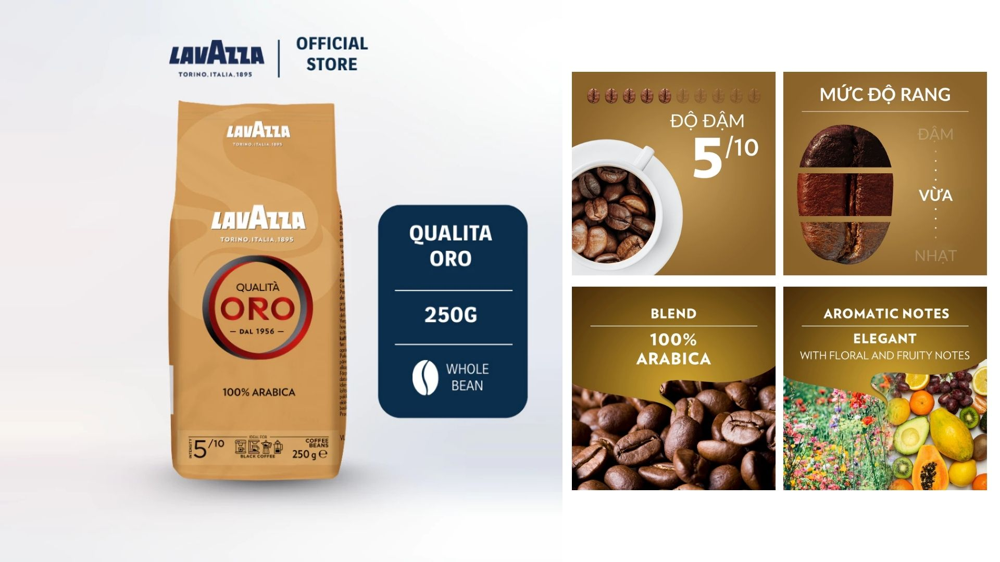
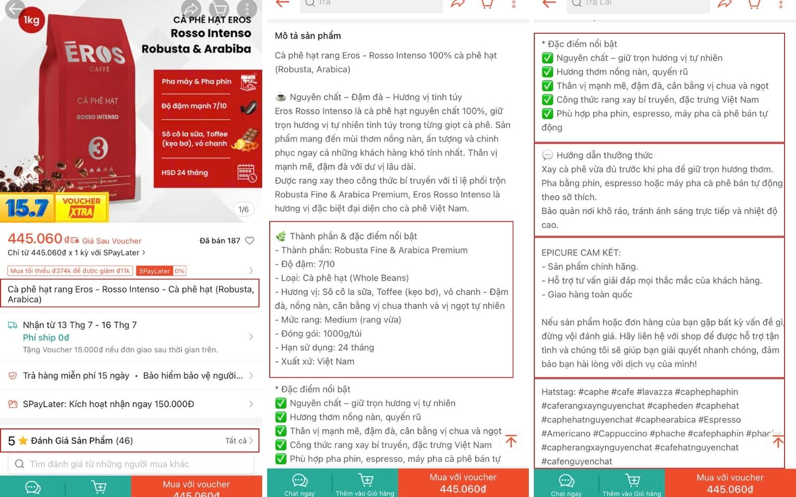
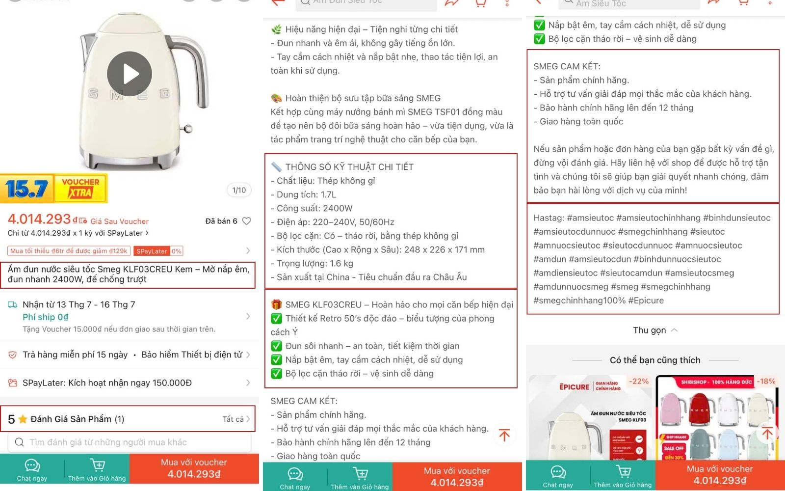
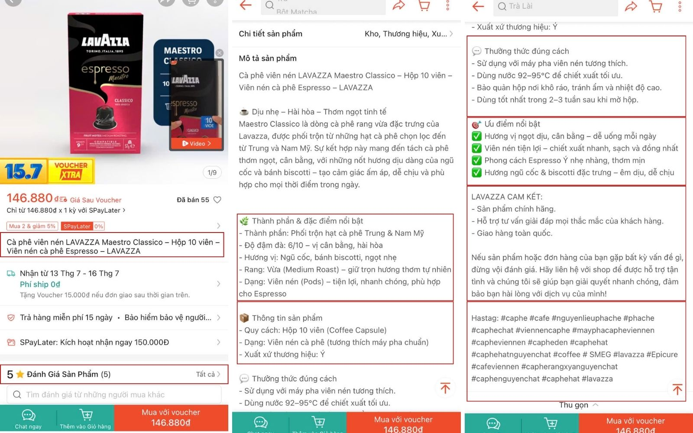

Quay lại danh sách dự án
CASE STUDY · EPICURE VINA · 2023–2026
E-commerce Growth & Marketplace Operations
Shopee · Lazada · TikTok Shop
Xây dựng và vận hành các gian hàng E-commerce cho danh mục máy pha cà phê, cà phê và thiết bị gia dụng cao cấp. Shopee là kênh trọng tâm; Lazada được vận hành trong giai đoạn 2023–2024 và TikTok Shop được thử nghiệm từ đầu năm 2026.

01 · BUSINESS IMPACT
Kết quả vận hành
Số liệu được tổng hợp từ báo cáo vận hành nội bộ. Dữ liệu lịch sử Lazada và một số dashboard cũ không còn được lưu trữ nên không dùng làm minh chứng hình ảnh.
02 · CONTEXT & CHALLENGE
Một hệ thống, nhiều thương hiệu và hành vi mua
E-commerce là điểm chạm quan trọng bên cạnh hệ thống cửa hàng và đội ngũ Sales, giúp khách hàng chủ động tìm hiểu, so sánh và mua sản phẩm trực tuyến.
- Danh mục trải dài từ cà phê tiêu dùng đến máy pha cà phê và thiết bị gia dụng cao cấp.
- Mỗi thương hiệu có định vị, giá bán và hành vi mua khác nhau.
- Shopee, Lazada và TikTok Shop có cơ chế traffic, promotion và nội dung khác nhau.
- Dữ liệu giá, tồn kho, hình ảnh, thông số và chính sách cần được đồng bộ liên tục.
03 · OBJECTIVES
Chuẩn hóa nền tảng để tăng khả năng chuyển đổi
Store Standardization
Chuẩn hóa gian hàng, cấu trúc danh mục và chất lượng thông tin sản phẩm.
Commercial Growth
Phát triển assortment, pricing và promotion phù hợp với từng thương hiệu.
Performance System
Theo dõi traffic, conversion, đơn hàng, tồn kho và hiệu quả SKU để hỗ trợ quyết định.
04 · STRATEGIC APPROACH
Channel portfolio & assortment strategy
Channel Portfolio
- Shopee: kênh doanh thu và campaign trọng tâm.
- Lazada: mở rộng độ phủ trong giai đoạn 2023–2024.
- TikTok Shop: thử nghiệm content-to-commerce từ đầu 2026.
Brand & Assortment
- Breville: phân nhóm theo model, chức năng và nhu cầu pha chế.
- SMEG: ưu tiên hình ảnh premium và combo có chọn lọc.
- Lavazza: tổ chức theo định dạng, khối lượng và cách pha.
- EPICURE: gian hàng tổng hợp đa thương hiệu.
Product Page System
Chuẩn hóa tên, taxonomy, key visual, thông số, mô tả, bảo hành, phụ kiện, biến thể, search keywords và campaign banners.
Campaign Discipline
Chọn đúng SKU, kiểm tra tồn kho, xác định giá–voucher–combo, đăng ký campaign và chuẩn bị creative assets theo từng đợt bán hàng.
05 · STOREFRONT SYSTEM
Ba cấu trúc gian hàng theo ba vai trò thương hiệu



06 · PRODUCT PAGE OPTIMIZATION
Từ key visual đến nội dung cân nhắc mua






07 · OPERATING FRAMEWORK
Campaign planning & funnel management
| Giai đoạn | Hoạt động chính | Điểm kiểm soát |
|---|---|---|
| Before | Chọn SKU, kiểm tra tồn kho, giá, combo, voucher, đăng ký chương trình và chuẩn bị banner. | Khả năng cung ứng, biên độ ưu đãi, mục tiêu campaign. |
| During | Theo dõi traffic, quảng cáo, đơn hàng, phản hồi và tình trạng tồn kho. | Hiệu quả SKU, tốc độ phản hồi, lỗi vận hành. |
| After | Tổng hợp kết quả, so sánh SKU và báo cáo. | Bài học campaign và quyết định danh mục tiếp theo. |
| Funnel | Chỉ số và yếu tố quản lý |
|---|---|
| Awareness | Search, campaign traffic, social media và affiliate. |
| Consideration | Hình ảnh, mô tả sản phẩm, review, so sánh model và bảo hành. |
| Conversion | Giá, voucher, combo, freeship, tồn kho và tốc độ phản hồi. |
| Retention | Voucher mua lại, follower voucher, remarketing và chăm sóc khách hàng. |
08 · MY ROLE
Phạm vi phụ trách
- Quản lý danh mục sản phẩm trên Shopee, Lazada và TikTok Shop.
- Chuẩn hóa gian hàng, taxonomy, tên, từ khóa, hình ảnh, mô tả và thông số.
- Xây dựng campaign plan, sản phẩm trọng tâm và creative brief hằng tháng.
- Phối hợp pricing, combo, voucher, quà tặng, tồn kho và thông tin sản phẩm.
- Theo dõi traffic, doanh thu, đơn hàng, quảng cáo và hiệu quả SKU.
- Thử nghiệm TikTok Shop như một kênh content-to-commerce mới.
09 · KEY LEARNING
Ba bài học cốt lõi
Standardize the system, differentiate the storefront. Quy trình vận hành cần thống nhất nhưng trải nghiệm phải phản ánh đúng vai trò từng thương hiệu.
Assortment is a commercial decision. Danh mục, giá, tồn kho và campaign phải được xem như một hệ thống liên kết.
Optimization is continuous. Chất lượng trang sản phẩm và quyết định SKU cần được điều chỉnh từ dữ liệu vận hành thực tế.